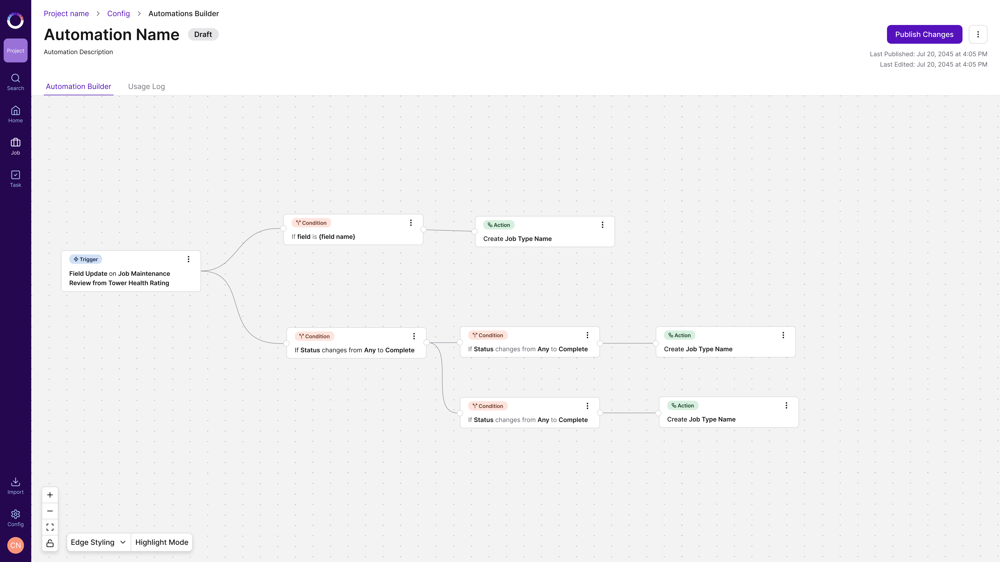
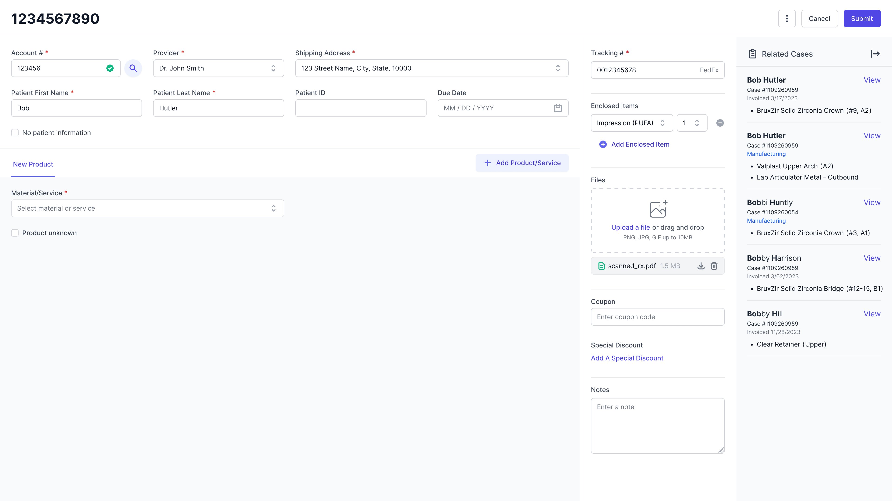
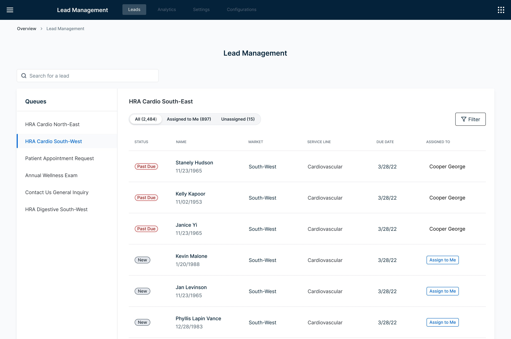

Enterprise workflow canvases · 2026
Canvas Unification Initiative
Three canvases, built over time and never reconciled. One consistent experience, without making users relearn a thing.
Read the case study →Design manager · Lead product designer
I untangle inherited, inconsistent workflows into products people can use. I lead a small design team while staying hands-on.
Explore my workSelected work

Enterprise workflow canvases · 2026
Three canvases, built over time and never reconciled. One consistent experience, without making users relearn a thing.
Read the case study →
Lab management system · 2024
Inherited a shelved solution, a hard deadline, and a team expecting the impossible. Here’s what shipped.
Read the case study →
Lead management · 2022
No direct user access. No clear requirements. Just a hard deadline and a client who needed something that didn’t exist yet.
Read the case study →About
Design manager and lead product designer with 7+ years in complex enterprise software, specializing in untangling inherited, inconsistent workflows into products people can use. Currently lead a small design team while staying hands-on.
Based in Orange County, CA.